简介
- redis数据保存在内存中，因此它的速度非常快，性能非常高。
- 一旦断电，数据则会消失
- 以键值对的形式存储数据
- redis所有配置都存储在redis.conf文件中，因此他它配置文件需要进行备份
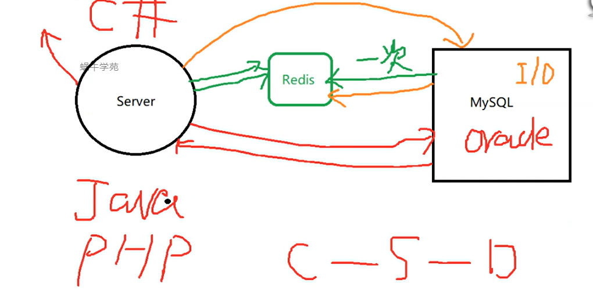
使用
### 安装
redis是开源的，须在官网下载源码进行编译安装。
安装后的默认存在路径是/usr/local/bin/
启动
./redis-server redis-config 启动时需要使用配置文件，redis源码中默认存在一个配置文件。
### 操作
-
连接时要使用redis-cli 工具 redis-cli -h 192.168.1.1 -p 6379 如果有密码可用-a参数指定
-
set key vnlue 设置 健为key 值为vulue
-
get key 查询值
-
redis中只存在字符串类型数据
-
redis默认有16个数据库
远程连接
redis默认不支持远程连接 ，需要改配置文件
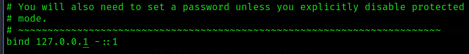
将127.0.0.1 改为 0.0.0.0 即可
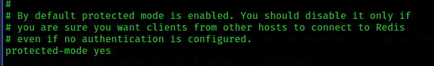
安全层默认开启，作用是禁止外部访问redis，但改了bind requirepass 参数，这个模式就默认失效了。
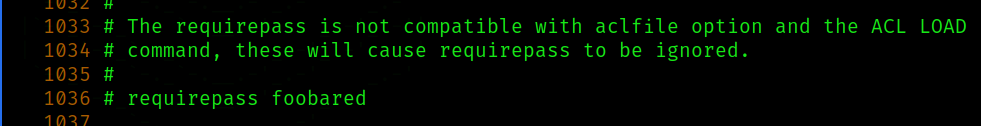
设置密码
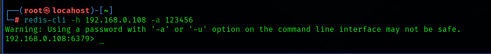
成功连接
-
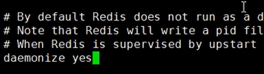
将此值改为yes ，redis默认在命令行界面启动，一旦关掉界面，redis服务就会停止没危险，需要将redis后台启动
-
redis中的数据类型
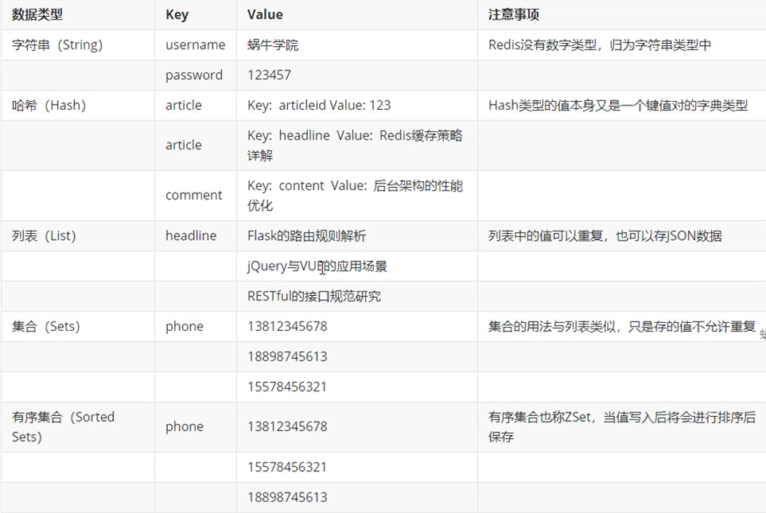
hash类型比较特殊 ，它的value中，又嵌套了一个key和value
通用命令
redis中默认有16个数据库，它们的编号是0-15 ， 使用select 5 表示切换到编号为5的数据库
查
keys * ： 可列出所有key
keys n* : 列出开头为n的key ，就是常规的通配符的用法。
exists key : 可查询该key是否存在
get key : 查询该key的值
randomkey ： 随机获取一个key值
type key ： 查key的类型
增
set key value : 新增键值对
mset name zhangsan phone 182121212 addr chengdu sex male : 一次设置多个键值对 name zhangsan / phone 182121212 / addr chengdu / sex male
move key 1 ： 将key移动到1数据库中，相当于剪切粘贴。
改
rename key newkey ： 修改key的称呼
删 （高危操作指令）
del key ： 删除一个key
flushdb 删除当前数据库的所有key
flushall 删除所有数据库的所有key
生命周期
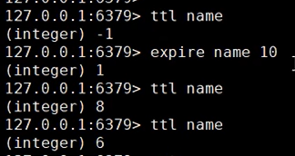
redis参数可以设置生命周期，表示多少时间后消失。
ttl name 查询生命周期
expire name 10 将生命周期设置为10s
persist name 把生命周期设置永久 ， 默认就是永久
进阶命令
hash 类型操作
hset key key1 value
hset key key2 value 在key域设置中 key2 和value 的键值对。
hget key key1 查询key域中 的key的值
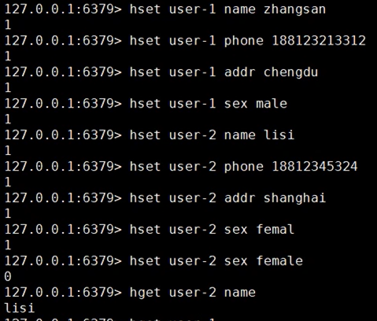
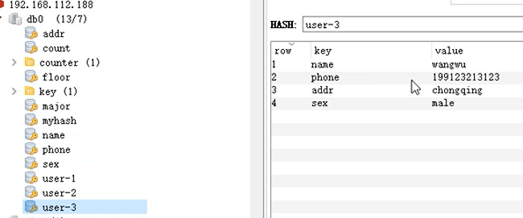
它类似于mysql的表结构。
hgetall key ： 查看key域中所有的键值对
hkeys key ： 获取key域中所有的key
以下需要时再学吧
列表类型操作
就是普通的数组
集合类型操作
重复的value不会插入
有序集合
数据会顺序排列
无序集合
不会排序
redis持久化
将内存中的数据存储到硬盘中，它有两个持久化方案, RDB && AOF
RDB
redis服务停止后，默认会将数据存在/usr/local/bin/目录下 ，文件名为dump.rdb ，再次启动时会自动调用该文件，将数据写到redis中。
可在redis.conf 修改策略
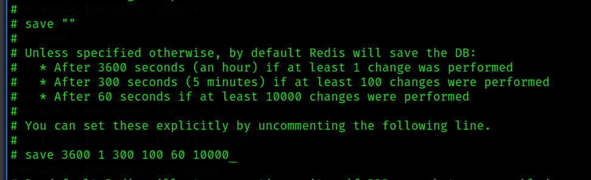
此处只是个示例，分别表示数据3600s内 变了一个key 就保存，300s内 变了100key 保存 ，60s内变了10000个key 就保存。
也可以直接使用save 命令进行手动保存，此方式不受策略影响
dump.rdb是一个二进制文件。
AOF
和mysql类似，存储的是sql语句日志，恢复时，相当于执行一遍sql命令，它的数据默认保存到/usr/local/bin/中的 appendonly.aof 文件中
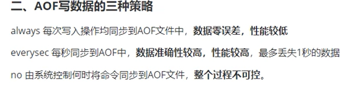
AOF 默认不开启 ，需修改redis.conf ，注意，开启AOF后RDB会自动关闭，它们之间不能共存
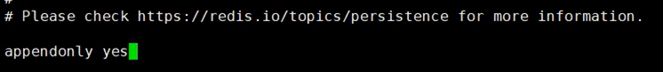
改为yes
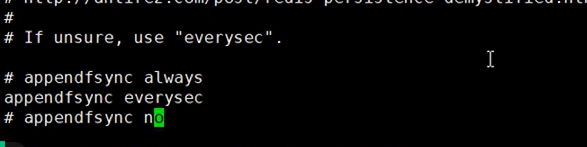
默认是everysec策略
appendonly.aof存储的不是二进制，而是erdis通信的报文格式。
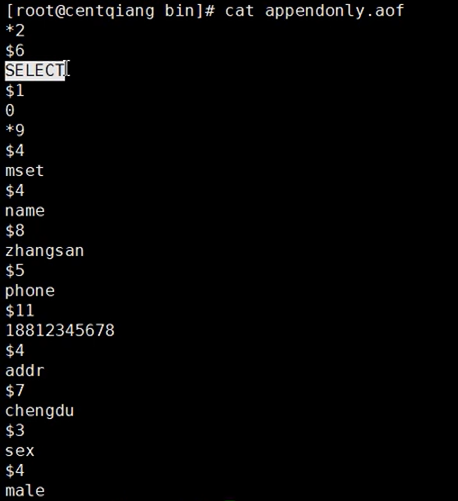
从上到下的意思
*2 两个参数 $6 6个字节 表示select $1 一个字节 表示 0 以此类推，可得出命令，select 0
以此类推 mset name zhangsan phone 182121212 addr chengdu sex male
RDB和AOF 的区别
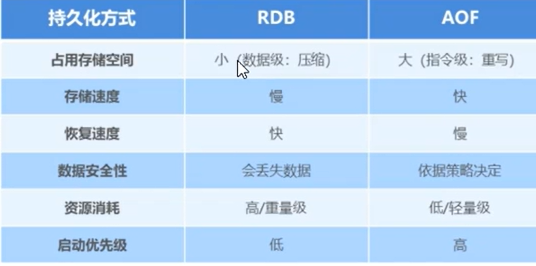
主从复制
概念
master ： 主 被写入数据
slave ：从 从master同步数据
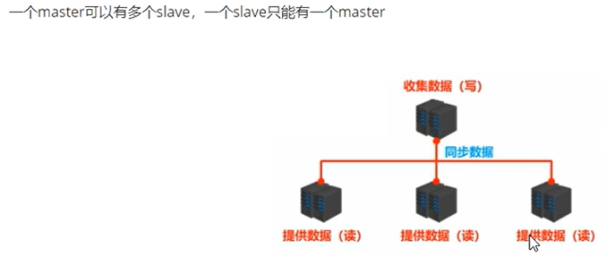
作用
可提高可用性，读写分离
配置
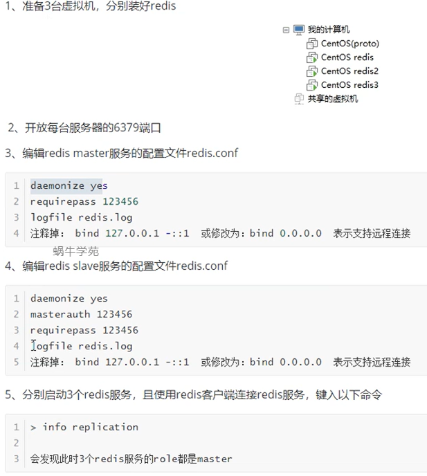
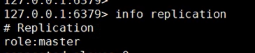
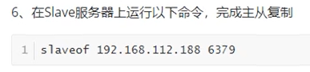
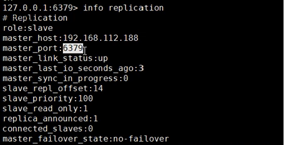
成功